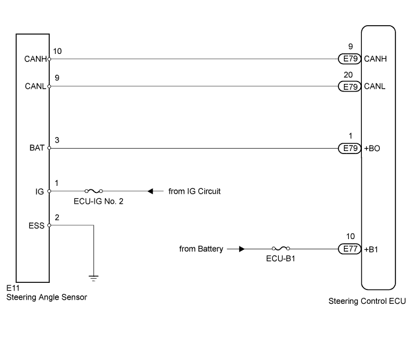
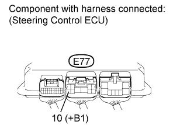
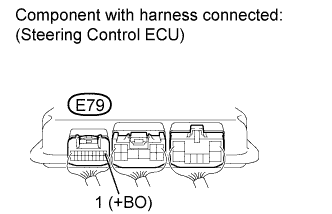
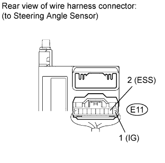
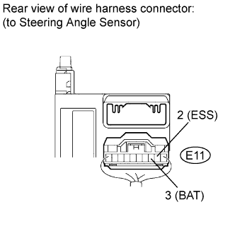

DTC C15C1/74 Steering Angle Sensor Malfunction |
DTC C15C2/74 Steering Angle Sensor B+ Malfunction |
| DTC Code | DTC Detection Condition | Trouble Area |
| C15C1/74 | The steering control ECU receives a steering angle sensor malfunction signal via CAN communication. |
|
| C15C2/74 | The steering control ECU receives a B+ open circuit signal from the steering angle sensor via CAN communication. |
|

| 1.CHECK DTC (CAN COMMUNICATION SYSTEM) |
Using the intelligent tester, check if the CAN communication system is functioning normally (Click here for LHD, Click here for RHD).
| Result | Proceed to |
| DTC is not output | A |
| DTC is output (for LHD) | B |
| DTC is output (for RHD) | C |
|
| ||||
|
| ||||
| A | |
| 2.CHECK HARNESS AND CONNECTOR (STEERING CONTROL ECU +B1 TERMINAL VOLTAGE) |
 |
Measure the voltage according to the value(s) in the table below.
| Tester Connection | Condition | Specified Condition |
| E77-10 (+B1) - Body ground | Always | 11 to 14 V |
|
| ||||
| OK | |
| 3.CHECK STEERING CONTROL ECU (+BO TERMINAL VOLTAGE) |
 |
Measure the voltage according to the value(s) in the table below.
| Tester Connection | Condition | Specified Condition |
| E79-1 (+BO) - Body ground | Always | 11 to 14 V |
| Result Result | Proceed to |
| OK | A |
| NG (for LHD) | B |
| NG (for RHD) | C |
|
| ||||
|
| ||||
| A | |
| 4.CHECK HARNESS AND CONNECTOR (STEERING ANGLE SENSOR) |
 |
Disconnect the E11 steering angle sensor connector.
Measure the voltage according to the value(s) in the table below.
| Tester Connection | Switch Condition | Specified Condition |
| E11-1 (IG) - Body ground | Engine switch on (IG) | 11 to 14 V |
Measure the resistance according to the value(s) in the table below.
| Tester Connection | Condition | Specified Condition |
| E11-2 (ESS) - Body ground | Always | Below 1 Ω |
|
| ||||
| OK | |
| 5.CHECK STEERING ANGLE SENSOR |
 |
Disconnect the E11 steering angle sensor connector.
Measure the voltage according to the value(s) in the table below.
| Tester Connection | Switch Condition | Specified Condition |
| E11-3 (BAT) - E11-2 (ESS) | Engine switch on (IG) | 11 to 14 V |
|
| ||||
| OK | ||
| ||